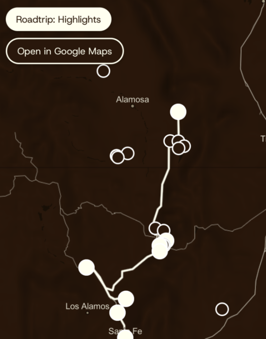
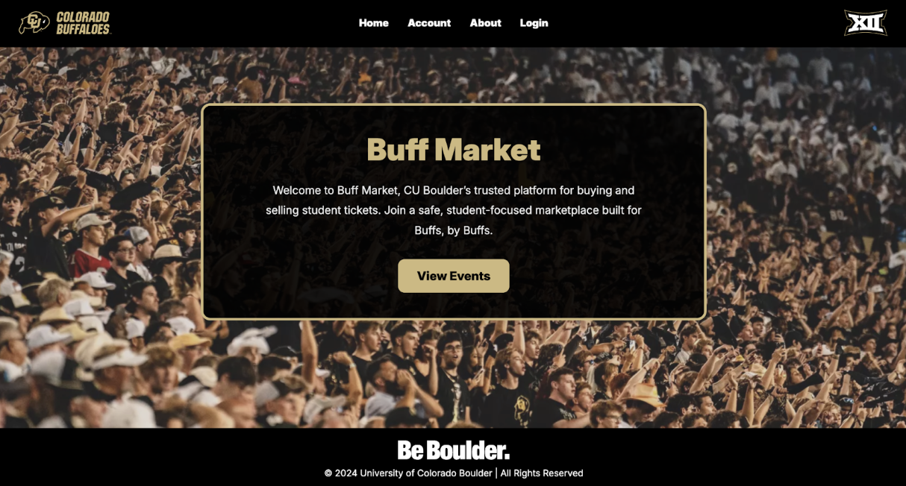
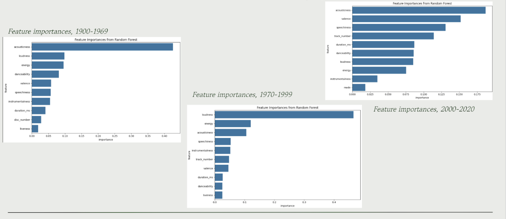

This project is used as a mobile sidekick for examining various exhibits throughout New Mexico and Colorado. Users take roadtrips and the app shows the users the locations of exhibits, what they are about, more information, and include playlists related to the museum work. Tools used: React Native, TypeScript/JavaScript, APIs. Personal role was that I contributed to many project logistics, content page creation, roadtrip creation. Worked in a team of 5 total people. This project demonstrates my skills in Mobile Development, Web Development, API integration, offline app creation.
View Code
Buff Market is a student marketplace app that allows students to buy and sell tickets to each other without using third party services open to all people– allowing students to benefit from cheaper pricing offered by the university. Tools used: HTML/CSS/JavaScript, Handlebars, PostgreSQL. My Personal role was that I made several pages including ticket page, account page, etc and ensure login system worked and passed through backend.
View Code
Given an audio sample transformed using certain techniques, model attempts to classify the genre based on audio only and no given metadata. I developed the project, found interesting results in how real musical trends over eras can be displayed through a machine learning lens and how various features exist and correlate with other features. Tools used: Python, sklearn, matplotlib, pandas, kaggle for data collection. This project demonstrates my skills in AI, Machine Learning, Model Classification and generation.
Read Report